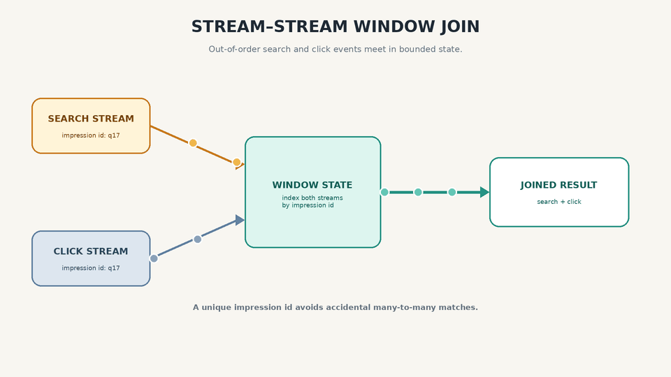
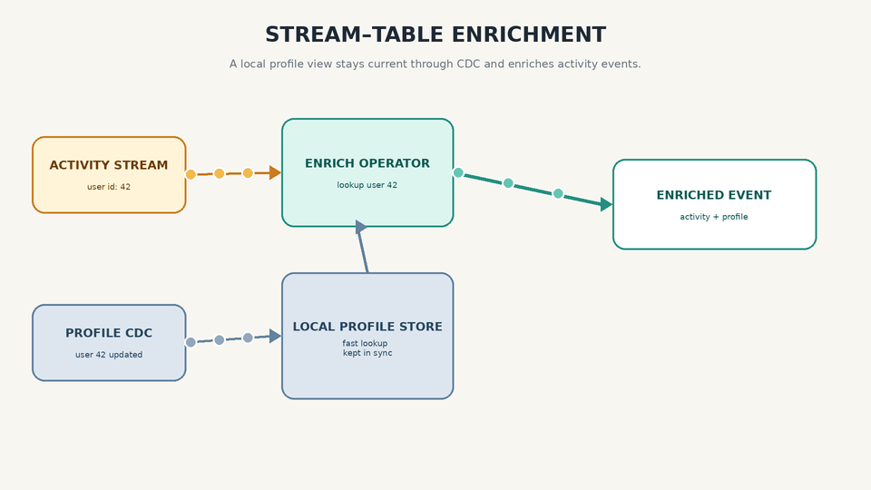
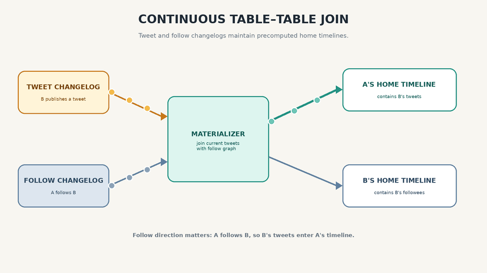

What the Stream? Phase 09
Stream Joins and Time Dependence
Stream Joins
Since streams deal with unbounded datasets and the new events can appear at anytime, the joins with respect to streams are more challenging. We will discuss the type of stream joins in this section.
Stream-Stream Join (Window Join)
We will understand this type join having the reference of ranking of search results for an application.
Each event where the user types a query and when the user clicks on the result will require us to process the event and update the underlying rankings. The click and search action need to be connected and this is majorly done by having the same session ID for these events.
But in a distributed application and network lags, the click event can arrive earlier than the search event. Not to ignore, the user can abandon a search by keep the tab inactive for days, weeks or months.
The most trivial solution that we might think is to embed the search in the click event, but this scenario would not tell you about the times where the user searched for the query but did not click on it, in order to measure quality you need accurate click-through rates for both the type of events.
In this join, the stream procession maintains a state: for example, all the events occurred in the window (let's assume window is of 1 hour), indexed by session ID.
Whenever a search or a click event occurs, we add it to the appropriate index and also check the other indexes to see if another event for the same session ID has already arrived.

Stream-Table Join (Stream Enrichment)
For example, you have to join a set of user activity events and a database of user profiles. The input would be a stream of user activity containing a user ID and the output would be enriched activity events in which the user ID has been augmented with profile information about the user.
To implement this join, the stream process need to look one activity event at a time and fetch the user ID present in the event from the database, and add the profile information to the event.
The database lookup could be implemented by querying a remote database but it could be slow or could overloading the remote database.
Another approach could be by having a local copy of the database on the disk, the local copy could be in-memory hash map if it is small or index on local disk.
Since the data is every growing in the case of stream hence the local copy in this case need to be in-sync with the database. We can use change data capture for this purpose, where the stream processor can subscribe to the changelog of the profiles database as well as the activity events, whenever a profile is updated, the local copy is updated as well.

Table-Table Join (Materialized View Maintenance)
Consider twitter's timeline, where a user see the tweets of the user's he/she have been following.
Now to construct a user's read timeline it's quite expensive to iterate over all the user's followers and add their tweets into the timeline in the runtime, alternatively we can construct a read timeline cache such that the user's feed becomes a single lookup.
Cache is updated with each respective relationship event as follow:
- When a user u sends a new tweet, it is added to the timeline of all the users following this user
- When a user delete's a tweet, it is removed from the following user's timeline
- When a user A follows a user B, then all the recent A's tweet are added in B's timeline
- When a user A unfollows a user B, then all the A's tweet are removed from B's timeline
To implement this cache you will need to join the stream of user's activity (addition and deletion of tweets) and follow-relationships table.
The stream process need to maintain a table having the details of user's followers such that the timeline can be updated with each activity event received. Another way to look at this approach is about maintaining a materialized view for a query that join these two entities.
SELECT follows.follower_id AS timeline_id,
array_agg(tweets.* ORDER BY tweets.timestamp DESC)
FROM tweets
JOIN follows ON follows.followee_id = tweets.sender_id
GROUP BY follows.follower_id
Time-Dependence of Joins
All the three types of joins that we discuss require the stream processors to maintain some state based on join input and query that state on messages from the other input join.
The order of events is of importance here, for example, a follow after adding a tweet and adding a tweet before following, will result in different timelines.
In partitioned log, the order of messages is maintained in a single partition, but ordering across partitions is not guaranteed.
This raises a questions at what point in time should the join happen, for instance, a updated user profile is taken join with events or old profile is joined.
In such scenario the joins have become non-deterministic, a join taken at different point in time may not result in same output, re-runs result in different outputs. It is possible for a stream processor to log of interleaving messages, but this also is not enough while recovering from faults.